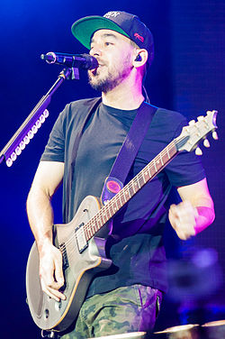

Hallo, Ik ben Tijmen een creatieve ziel met een drive voor Computers, schrijven, coderen, gamen, en Longboarden. Ik heb een grote passie voor muziek, en ben ik een grote metal head. Naast school werk ik ook bij de Lidl in Zaltbommel als kassa, vakkenvuller en broodbakker. Ik ben echt een grote work-alcholic, en wil dus graag werken. Wereldbouwen met tekeningen en het maken van culturen voor verschillende mensen of zelfs koninkrijk.
Dit is Mike Shinoda, een van mijn favoriete artisten. Mike is een van de lead-zangers van Linkin Park.